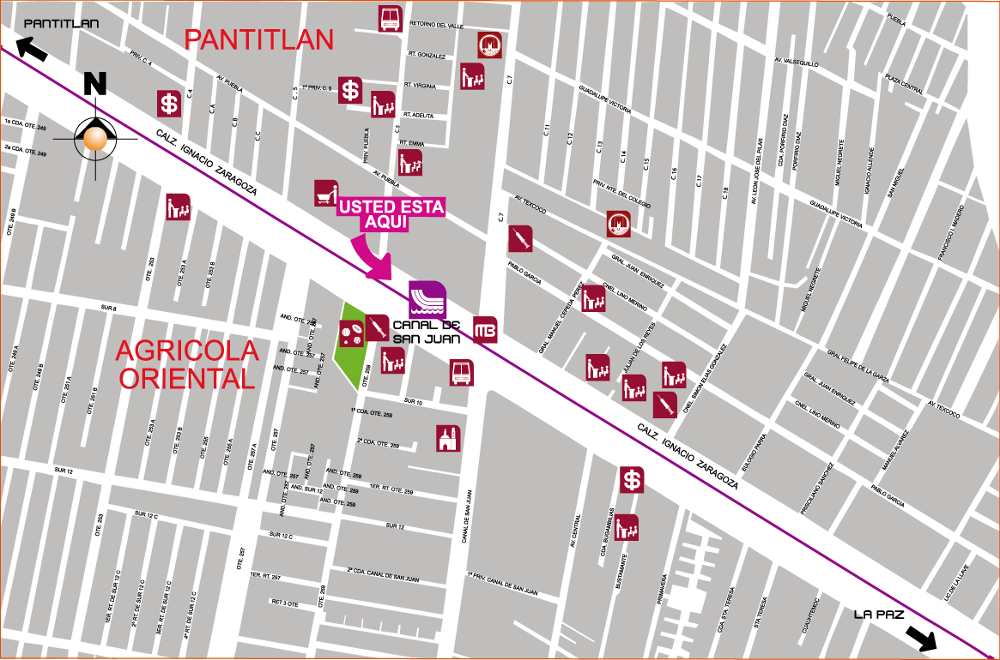

Descripción del ícono
La silueta de la estación es la parte delantera de una canoa azteca navegando en un canal.
Importante vialidad que une la Calle 7 con la avenida Canal de Garay, las cuales forman parte del trazo Oriente del Anillo Periférico. Según su nombre, era un canal que unía a Texcoco con Xochimilco, ahora es una avenida que comunica y atraviesa colonias importantes como Agrícola Oriental, Tepalcates, Leyes de Reforma, Chinampac de Juárez, La Regadera, Unidad Vicente Guerrero y Constitución de 1917, entre otras.
Servicios y transporte en la estación

Línea 2 del Metrobús Canal de San Juan, ubicado en calzada Ignacio Zaragoza y avenida Central.
Plano de barrio

Salidas de la estación
- Sur: 1er. Retorno de sur 10 y Avenida Canal de San Juan, Colonia Juárez Pantitlán.
- Norte: Calzada Ignacio Zaragoza.